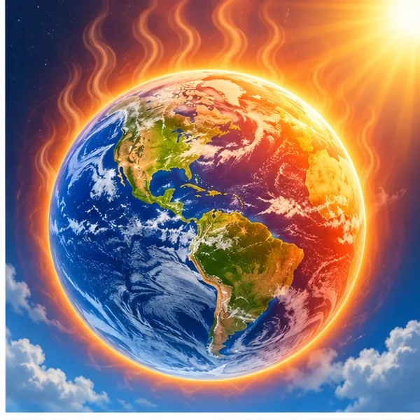
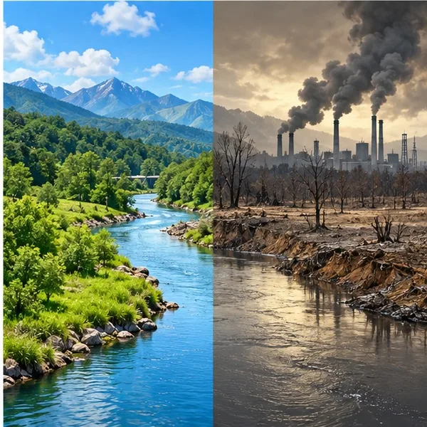
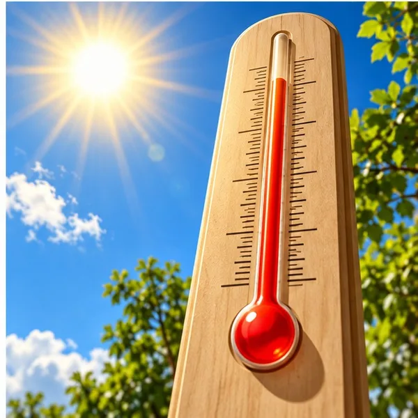
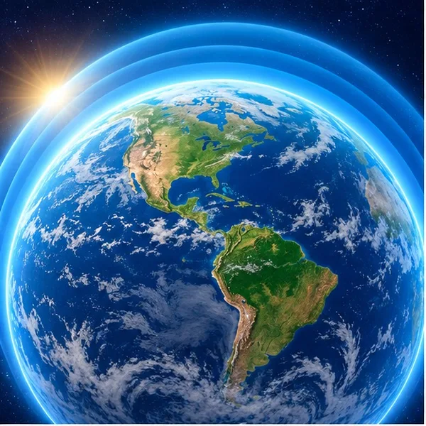
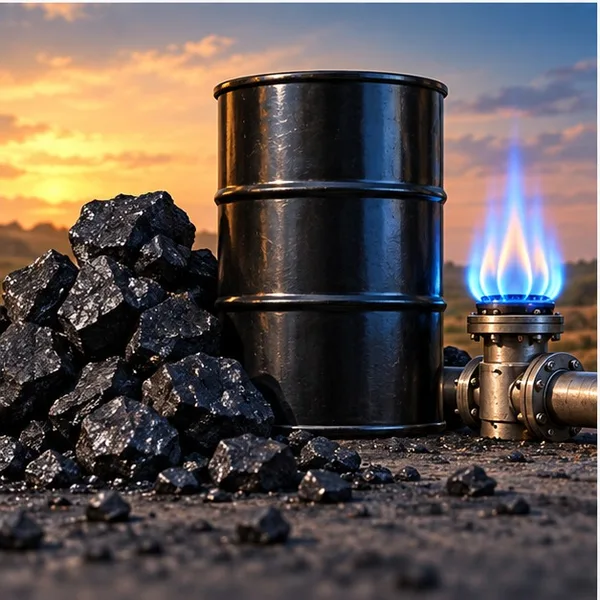
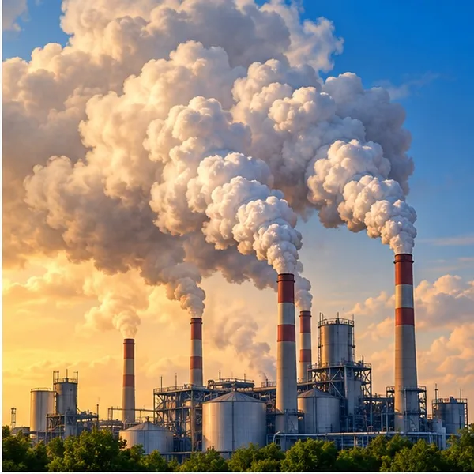
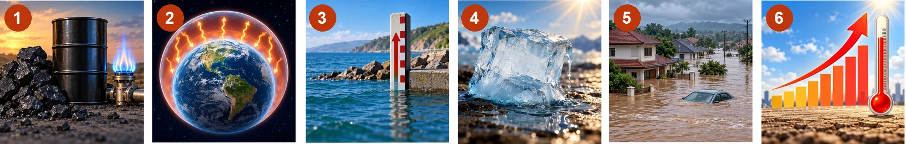
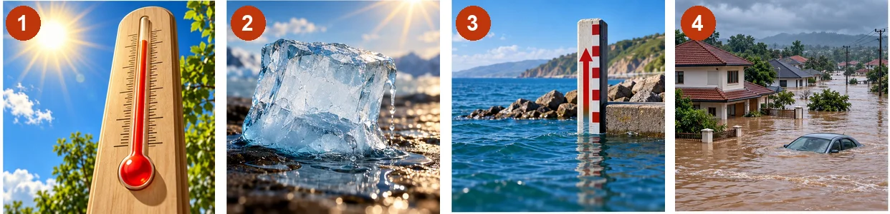

A presentation about global warming
Lesson 1 — Getting started
5Causes → greenhouse effect → consequences
- 🌍
use words about global warming
- 🎧
understand a talk about its causes and consequences
- 🔗
explain the greenhouse-effect chain
- 💬
talk about an effect you have experienced
Warm-up
Earth quiz
5 minutesWhat do you know about global warming?
1. Most places on Earth are warmer than they were 100 years ago. True
True · False
2. Where have some of the strongest and earliest impacts of global warming occurred? In the Northern latitudes
A. In the tropics · B. In the Northern latitudes · C. Equally all over the planet
What do you know about global warming?
3. How do scientists collect evidence about climate? D · all of the above
A. satellites in space · B. measurements on the ground (temperature, CO₂, sea level) · C. tree rings, ice cores and old records · D. all of the above
4. Which of the following gases does NOT trap heat? Nitrogen
A. carbon dioxide · B. nitrogen · C. water vapour · D. methane
What do you know about global warming?
5. As average global temperature rises, ______. average rainfall increases
A. average rainfall increases · B. average rainfall decreases · C. average rainfall is unchanged
6. Which greenhouse gas is the main driver of Earth’s current warming? Carbon dioxide
A. carbon dioxide · B. nitrous oxide · C. water vapour · D. methane
New words
Look · listen · repeat
7 minutes





What is it?

1 – 6 fossil fuel · greenhouse gas / trap heat · sea level · melt · flood · increase
Practice
Mr Quang, Mai and Nam · Tasks 1–4
20 minutesLook and predict

How many people are in the conversation? What are they discussing? 3 people · the causes and consequences of global warming
A presentation about global warming
Mr Quang: Good morning, class. Today’s lesson will start with Mai and Nam’s talk about some of the causes and consequences of global warming. Would you like to go first, Mai?
Mai: Yes, thank you. First, let me remind you what global warming refers to – it’s the increase in the earth’s temperature because of certain gases in the atmosphere.
A presentation about global warming
Nam: Exactly. These gases are mainly produced through human activities. For example, burnt for energy, fossil fuels release large amounts of carbon dioxide into the atmosphere.
Mr Quang: But how do these gases make the earth warmer?
Mai: Well, they act like the glass in a greenhouse. Trapping too much of the sun’s heat, they stop it from escaping back into space. This makes the planet hotter and hotter.
A presentation about global warming
Nam: That’s right. That’s why these heat-trapping pollutants are known as greenhouse gases, and their impact is called the greenhouse effect.
Mai: Global warming is also linked to rising sea levels. As temperatures rise, polar ice caps melt faster, adding more water to oceans. Higher sea levels can also lead to floods.
A presentation about global warming
Nam: Each year, the consequences of global warming become more serious, and its negative impact on the environment and people gets stronger.
Mr Quang: Good job! Thank you for sharing the information.
The greenhouse-effect chain
a. Trapping the sun’s heat · b. Making the planet warmer
c. Producing certain gases (e.g. CO₂) · d. Stopping the heat from escaping
1
c2
a3
d4
b
Explain the chain aloud with because · so · therefore.
a. activities · b. gases · c. warming · d. levels · e. pollutants
1. global c · global warming
2. heat-trapping e · heat-trapping pollutants
3. greenhouse b · greenhouse gases
4. human a · human activities
5. sea d · sea levels
Ready for the grammar lesson
1. ______ for energy, fossil fuels release large amounts of carbon dioxide into the atmosphere. Burnt
2. ______ too much of the sun’s heat, greenhouse gases stop it from escaping back into space. Trapping
3. As temperatures rise, polar ice caps melt faster, ______ more water to oceans. adding
Notice: burnt = passive meaning · trapping, adding = active meaning
Production
Global warming and you
10 minutesWhat is one effect of global warming that you have personally experienced?
- ☀️ hotter summers
- 🌧️ heavier rain
- 🌊 floods
- 🏜️ droughts
- 🌀 stronger storms
Last summer, … · In my hometown, … · I think it is caused by …
Speaking frame
Global warming happens when … Human activities release … into the …
These gases trap … and stop it from … As a result, …
One serious consequence is …
Homework
1. Learn the new words by heart.
2. Write 3 sentences about the causes and consequences of global warming.
3. Get ready for Lesson 2 — Language.